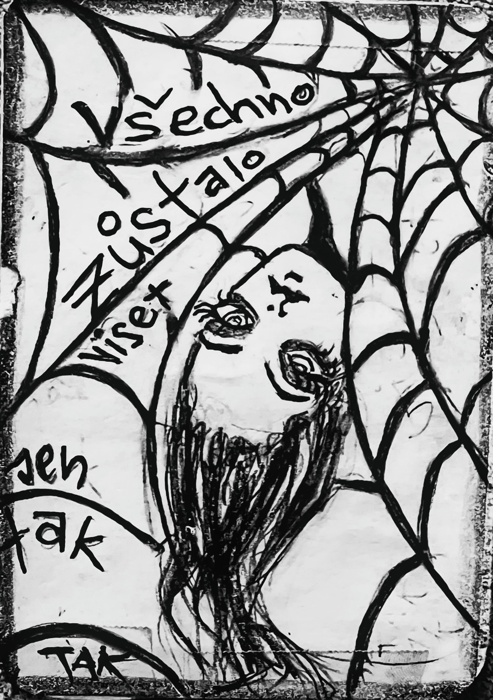

Zapsáno rukou, která nechtěla nic vysvětlit.
PAVOUK
který byl jen Jen Tak. Tak.
—
Pavouk měl nitě.
Tenké, pevné, neviditelné.
Věšel na ně věci.
Ne věci jako ponožky nebo klíče.
Ale věci, co se nedají držet.
Slova, co se neřekla.
Pocity, co se nehodily.
Otázky, co neměly odpověď.
—
Všechno zůstalo viset.
Jen tak.
Tak.
—
Jedna věta visela mezi dvěma větvemi.
„Promiň, že jsem…“
A dál už nic.
Jen nit.
Jen ticho.
—
Jedna vzpomínka visela nad dveřmi.
Na den, kdy se mělo něco stát, ale nestalo.
A pořád tam byla.
Jako ozdoba, co nikdo nechtěl.
—
Jedna omluva visela těsně nad hlavou.
Tak nízko, že se jí dalo dotknout.
Ale nikdo to neudělal.
Protože co kdyby spadla?
—
Pavouk seděl uprostřed.
V srdci sítě.
A nehybal se.
Protože když se hýbeš, věci padají.
A když padají, už je nikdo nezvedne.
—
„Proč to nenecháš spadnout?“ zeptala se .
Ta, co si zapisuje ticho.
„Protože když to visí, ještě to může být,“ řekl pavouk.
„A když to spadne?“
„Pak už je to jen minulost.“
—
Myš si to poznamenala.
Do mezery mezi slovy „jen“ a „tak“.
A pak se zeptala:
„A co když to visí moc dlouho?“
„Pak to ztvrdne,“ řekl pavouk.
„A už to nejde rozmotat.“
—
Pavouk dál věšel.
Jednu lásku, co se neřekla.
Jednu hádku, co se nevyřešila.
Jednu neděli, co se nikdy nestala.
A jednu větu, co zněla:
„To je v pohodě.“
Ale nebyla.
—
Vítr přišel.
Nenápadný.
Ale přesný.
Zavál.
A všechno se rozhoupalo.
Ale nic nespadlo.
—
„Všechno zůstalo viset,“ řekl pavouk.
„Jen tak.“
„Tak.“
—
Myš se podívala nahoru.
Na síť.
Na věci, co visely.
Na to, co se mělo stát, ale nestalo.
A řekla:
„Možná je tohle ten největší pád. Když se nic nezmění.“
—
Pavouk se usmál.
Ale jen trochu.
A zavěsil další věc...